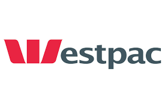
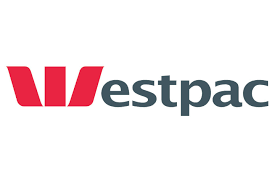

Interview
We interviewed Paul, a Freelance Project Management Consultant with three decades of experience within the IT Industry.
A consistent theme across all of Paul's recent work experiences was that IT is no longer it's own separate industry, it is intertwined within every industry. Whenever he is dealing with an IT project it is never independent of a greater business problem that needs to be solved. IT is the engine for organisational change. You don't just change the IT of an organisation, you change the whole structure and behaviour of the organisation at the same time. This sentiment is shared by the Forbes Technology Council panel of experts, who rate the people, process and management of an organisation as some of the biggest challenges in moving business into the Cloud (Forbes Technology Council, 2017).
Paul’s job as a Project Manager and Program Director is to be across all the higher levels of the business or organisation. Keep the specialists working towards the business goals, and not getting myopic only on their own area of expertise. He will constantly challenge IT ideas to ensure they are functional, optimised and serve the needs of the business as it changes and develops.
Paul highlighted the degree of speciality that occurs in the IT industry today, with each IT Professional having a huge level of knowledge and expertise in their own particular field. This is ideal for solving small, complex problems, at the IT level only. As all IT problems or changes occur within the context of organisational change, someone with less specialty skills, but a greater overall understanding and wider conceptual vision is required. Paul mentioned that he will often take an excellent architect into a meeting with a stakeholder who can talk to the finer technical specifications of the project. Paul as the manager, is able to translate this into a language that non-technical stakeholders can comprehend, contextualise and analyse it from a business strategy perspective. Paul is required to have a high level of technical understanding of the work that gets done, but not to the same extent as the people actually doing the work.
Paul describes the friction between architects and the organisation, positioning himself, as the Project Manager, in the role of mediator. Architects commonly have exceptional IT skills and creative vision, but rarely grasp the needs and purposes of the client or understand the rigidity of budget or time constraints. Architects wish to push for change in projects for the elegance of the technology involved, not because of the resilience of the business case. It is Paul's job to challenge the architects by questioning the necessity of their methods and vision, demanding a rigorous cost/benefit analysis. It is impossible for him to know the technical aspects in the same detail as the architects across all his varying projects. He must know enough that he is undaunted in the face of their propositions and does not accede to projects that are unnecessary or costly. In this way he works in the clients' best interests, ensuring that the technological change aligns holistically with organisational objectives, is efficient, streamlined and economical.
The interview with Paul was a retrospective journey through three decades of the IT industry. After graduating university he was a programmer for a few years before becoming an IT consultant, developing systems for a variety of clients, particularly banks and government agencies. He would work on large teams developing software to the requirements of clients. These teams could consist of up to 100 IT professionals, including many programmers and testers, as well as a project management team.
Paul describes the introduction of graphical user interfaces as a seismic shift in the IT landscape. The ironic shift from mainframe computing to distributed computing via personal computers, and now back to a modern version of mainframe computing via the cloud. This was a particularly fascinating perspective given that it mirrored the content of the university modules that week that focused on cloud computing and virtualisation, and here was a veteran IT professional describing this exact process from his perspective. His career spanned the many channels of software delivery, from sales, programming, project delivery, project management and maintenance.
Paul highlighted some misleading impressions about IT work that university graduates might have. He described how we are taught the importance of documenting our code, but that in reality many people do not do this. He said graduates dream of implementing new systems and cleverly solving problems for grateful customers, but in reality much of the work is much less exciting, involving disentangling messy legacy systems or working under high pressure to meet deadlines or whilst being scrutinised by regulators. He described his own role in curbing the lofty ambitions of creative architects, where it is his job to resilience-test their ideas. The work an IT Professional undertakes is often constrained by the Project Manager above them, who in turn is constrained by the client's requirements and/or budget. A graduate may envisage freedom of creativity and unlimited resources to pursue their muse, but in reality they must work to deadline, and many of their best ideas can be discarded by those they report to.
One of the challenges Paul alludes to is working with IT within the banking sector. He describes banks as "very, very complicated IT shops", where every product they sell is a separate IT solution, leading to an IT architectural "mess". The challenge here is the time it takes for a Project team to understand the current system they are dealing with, before they can even begin to work on a solution. This contrasts with perceptions that a graduate may have that they are able to instantly start working on a problem, walking into a client's space and begin fixing things right away. Particularly in the complicated and highly regulated world of banking IT, there is significant 'lag time' in gaining complete comprehension of the history and context of the systems currently in place.
Paul talks about the challenges banks face in migrating from on-premises data centres to the cloud. He describes this transition as an obvious choice, but one that is not achieved instantly and without difficulty. The fact that one of Australia's big four banks, Westpac, is still striving to achieve this, despite its size, power and budget exemplifies this difficulty.
One of the meetings Paul describes involves Platform as a Service (PaaS) technology. He is working with one of the large global Enterprise Resource Planning service providers, SAP, and his client is migrating to SAP in the cloud. He describes the benefits of PaaS for the client, in removing the "heartache" of customising bespoke software solutions because SAP standardises common business functions and packages it in an off-site software subscription service.
This captures an essential part of the modern IT industry, the 'ubiquitising' of software as Paul calls it. Rather than in the past, where each organisation had customised software built individually and exactly to their specifications, the aim now is to create software solutions that can be used across many organisations, with simple tailoring, so that the ongoing maintenance of the system does not cause downtime problems that are both expensive and disruptive to business. Paul talks about the pricing advantages of long-term software subscriptions, the benefits to outsourcing software maintenance in the overall context of many businesses trying to reduce their IT expenditure.
As a Project and Program Manager, Paul leads the inception of a project through to approval, including the implementation process following approval. This sees him interact with a variety of people and he gives some fascinating illustrations of these interactions. He deals with the heads of large organisations, such as New South Wales Corrective Services. This type of interaction is termed stakeholder engagement and involves translating their requirements from non-technical terminology into technical reality, managing client expectations and providing feedback on their proposal (such as costs, benefits, risks) in addition to updates on the project progress.
Paul is a freelance consultant, we were sensitive to the fact that consultants are rarely able to disclose their current clients, so as not to reveal organisational information to competitors or political opponents. This is evident where at one point he mentions his current client is a government agency, which could be one of hundreds. He describes being the mediator here between the agency and New South Wales Treasury, another instance of interesting interactions he has. Paul is mediating once again this time, between the high-end stakeholders at the agency he is employed by and the agency responsible for funding the change. Paul had previously worked for Treasury and mentioned that they were much easier to work with by provisioning funds, however, they were harder to work for when trying to implement organisational change. Given Paul's professionalism and expertise, presumably the reason that Treasury is so accommodating when he is requesting funds is because his business case on behalf of the government organisation is so rigorously assessed and justified, thereby it can be presented in a forthright and compelling manner.
Paul gave some valuable insights into work as a Junior IT Professional and how choices we make at university can determine how employable we are. Creativity and vision are the most in-demand skills in the IT world right now. This is because programming is faster and easier than it used to be. It is the creative vision that is a rarer commodity than programming ability. Paul does emphasise that programming is still the most enjoyable aspect of IT.
Paul vocalized honesty and integrity are his favourite characteristics in an IT Professional. Paul has no time for people who try to hide their inadequacies or who have overconfidence in their abilities that lead them to neglect testing their own software. Paul would prefer an employee who approaches him with a problem they cannot solve, because then he can manage things to get the problem solved, rather than discovering it has been hidden at a later date when the project is further along in development. He revealed a great piece of wisdom that "all software has bugs" and to never declare that a program has no bugs. This shows an arrogance that is undesirable in an employee.
Paul states it is important for upcoming IT Professionals to consider the decision to be freelance or employed. He has been freelancing for 20 years, which comes with less stability, more flexibility and higher pay. There are overheads to being a freelancer similar to any small business. Around 1 in 4 IT Professionals are employed as a contractor. A major driving force behind this being the specialist and project-based nature of IT work (M&T Resources). There are numerous benefits to freelancing, not just monetary and lifestyle. These include exposure to numerous organisations and projects, allowing contractors to rapidly develop diverse skills and build valuable professional networks (M&T Resources).
In conclusion it was fascinating to hear the depth and reach of Paul's experience within the IT industry over the past three decades. From Paul’s initial wave of IT adoption within government and industry, to each step of the modernisation process, including cloud migration presently. Paul will be a valuable contact to have in future whether it be career advice, professional mentoring or help finding employment.
 
